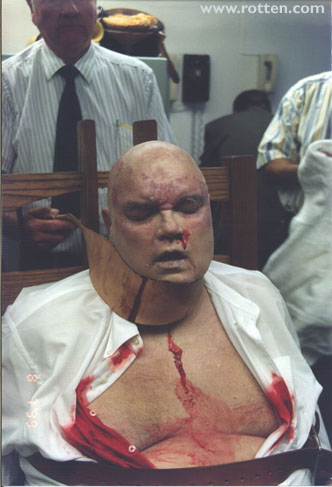
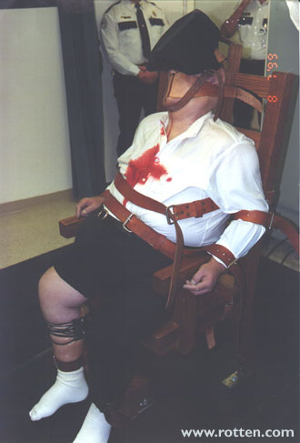
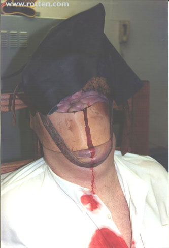

|
rotten.com
 On July 8 1999, murderer Allen Lee Davis was executed on the Florida electric chair "Old Sparky". Davis' face was bloodied and photographs taken, which were later released by the Florida Supreme Court.
 Florida only offers execution via the chair, and thus after the publicity following this execution, inmate Thomas Provensano filed suit claiming cruel and unusual punishment. On August 2, a judge ruled this argument ineligible to stay his execution.
 Previously, on March 24 1999, during the execution of Pedro Medina on the same chair, twelve inch flames were seen to erupt from the face and head of Medina, and the stench of burnt flesh was evident after the execution. No photos are available from that execution, but these of Davis's are quite vivid.
|